A Palantir Foundry Workshop app that connects episode context, video/QC evidence, staged human review, defect attribution, and follow-up actions into a workflow for training handoff.
This page is a closer walkthrough of the Workshop app I rebuilt for my Physical AI portfolio case. The app is not a generic dashboard. It models how a team can move from messy Physical AI data collection results to review decisions, expert escalation, training-readiness judgment, and operational follow-up.
Physical AI data review is not just a question of collecting more robot episodes. A collected episode may pass, fail, or be partially salvageable. Evidence can be scattered across video, sensor checks, raw packages, metadata, reviewer notes, and downstream export items. If the team only sees a flat pass/fail list, it cannot tell which segment is usable, why a case needs expert judgment, or what should change in future collection.
The app’s operating thesis is simple: collected episodes are not automatically training-ready data. The review system has to preserve the full collection context, localize issues to the relevant subtask/action context, record staged reviewer judgment, and connect the decision to dataset readiness and follow-up actions.
The repeated design choice is to keep each surface at the right grain: batch state at the dashboard, collection-attempt context at the episode level, training-use judgment at the segment level, and operational correction at the action level.
The dashboard starts with operating state rather than raw tables. It tells the reviewer whether the current batch is moving toward training handoff, which segment cases required expert judgment, which episodes should be opened for deeper review, and which defect categories are reducing usable Physical AI data.
Open Review Segments = count(Subtask Segment where review_decision_state ≠ made)
Usable Segment Yield = count(final_training_decision = usable_for_training) ÷ count(all Subtask Segment rows) × 100
Batch Readiness Lead Time = latest export_ready_at − earliest episode_collection_started_at
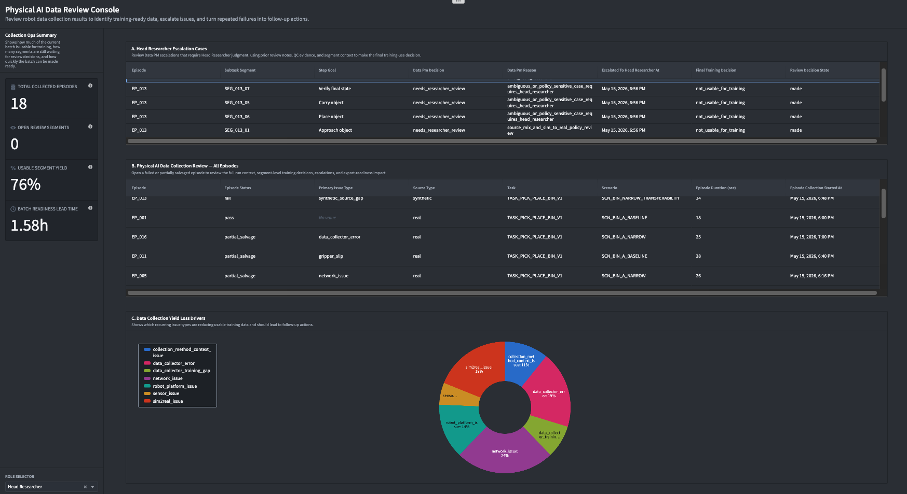
This is not a generic error list. It isolates segment-level cases that the Data PM could not safely close alone. Each row preserves the episode, selected segment, subtask goal, Data PM decision, escalation reason, escalation timestamp, final training decision, and review decision state — so the Head Researcher does not need to restart from zero or inspect every episode. They receive the cases where judgment is ambiguous or policy-sensitive, with the prior routing reason still attached.
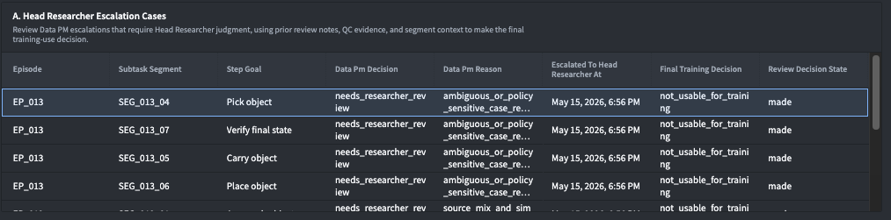
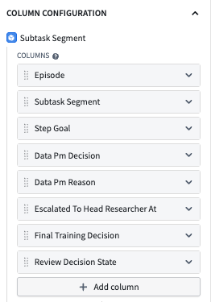
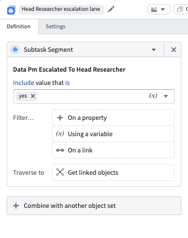
The all-episodes table keeps decisions grounded in the original collection attempt. A reviewer can start from episode status, primary issue, source type, task, scenario, duration, and collection time before drilling into segment-level decisions. This prevents episode-level status from being confused with final segment-level training usability — a partial_salvage episode can still contain segments that are usable for training.
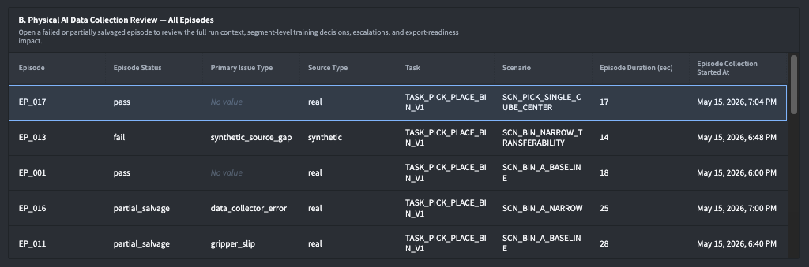
This chart turns reviewed Physical AI data into an operating signal. Instead of showing failed episodes as isolated cases, it groups defect attribution records by defect category, so the team can see whether usable training data is being lost to network issues, collector errors, platform/sensor issues, collection-method context, or sim-to-real gaps — giving Data PMs and Head Researchers a concrete starting point for follow-up action after segment review is closed.
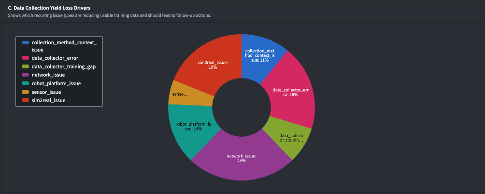
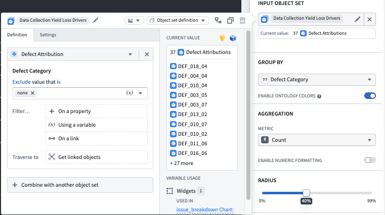
This is the expert-judgment shortcut. From the Dashboard, the Head Researcher opens A. Head Researcher Escalation Cases and clicks directly into the segment that needs their judgment — skipping the full episode context, because the case has already been routed to them with a reason attached.
This is not a generic error list. It isolates segment-level cases that the Data PM could not safely close alone. Each row preserves the episode, selected segment, subtask goal, Data PM decision, escalation reason, escalation timestamp, final training decision, and review decision state — so the Head Researcher does not need to restart from zero or inspect every episode. They receive the cases where judgment is ambiguous or policy-sensitive, with the prior routing reason still attached.
Clicking a row opens straight into the segment-level decision surface, with a fixed top context bar showing the selected segment and its parent episode, and a Segment Window / Open Video button.
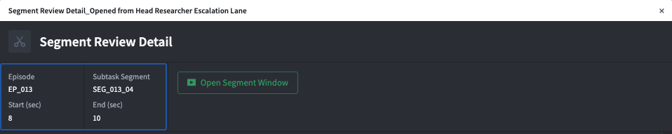
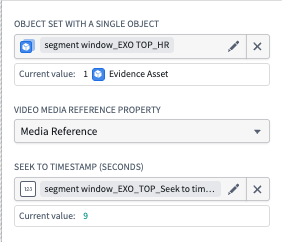
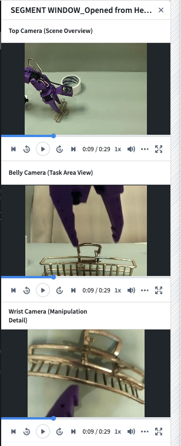
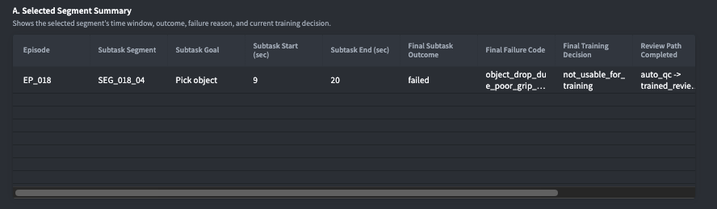
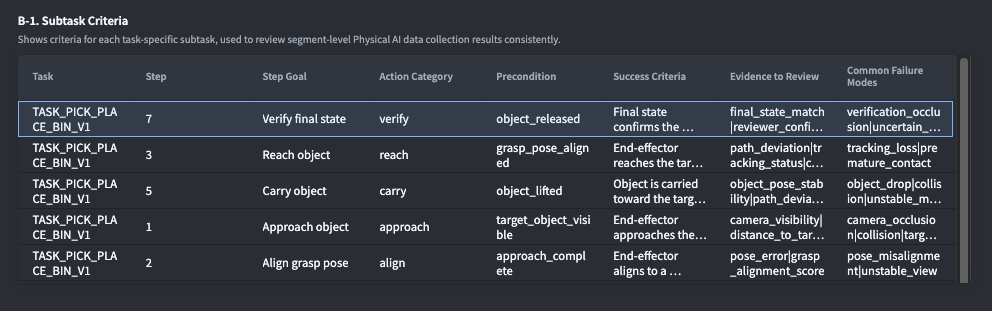
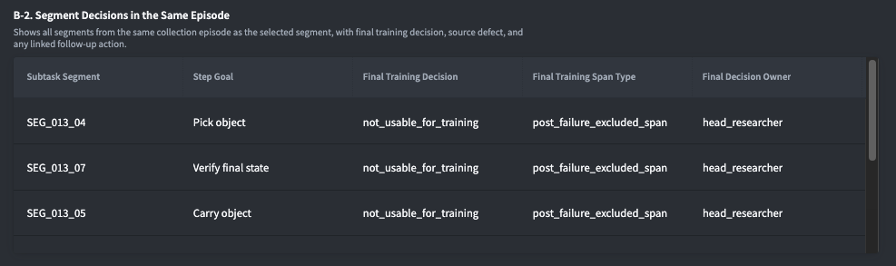
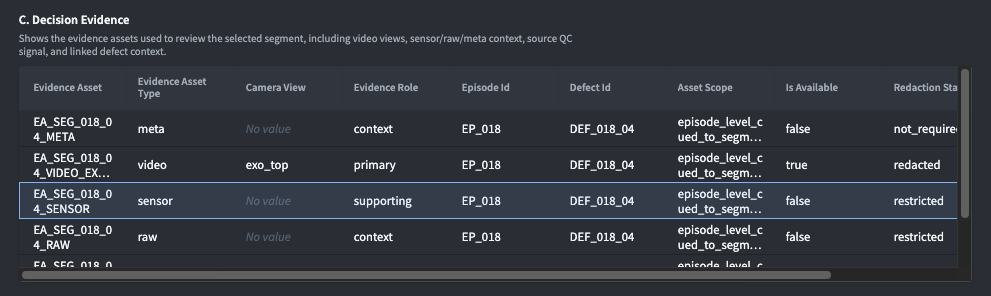
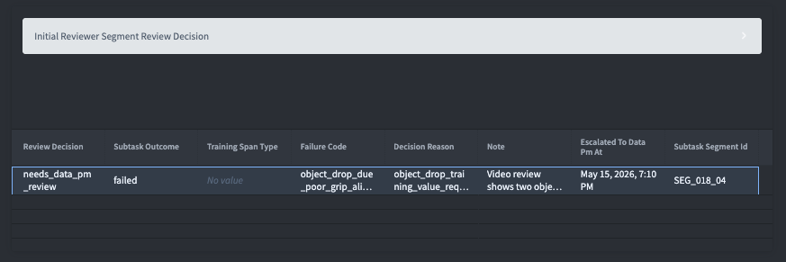
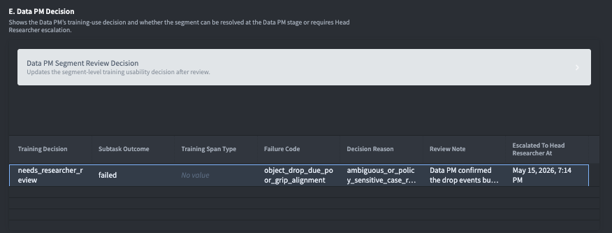
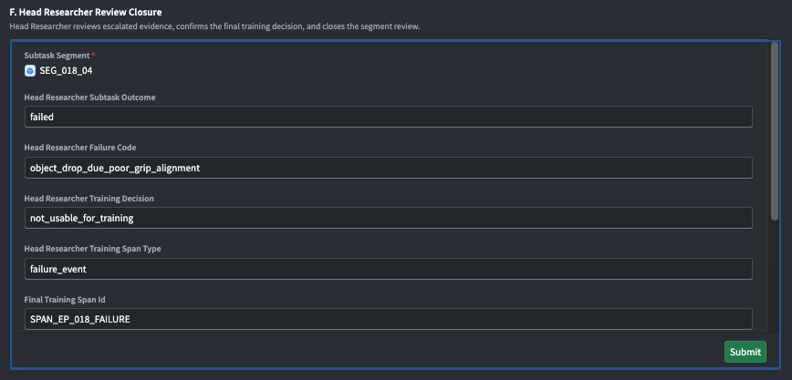
If the closure identifies a defect, the reviewer can click through to a recommended action: target, owner, priority, due date, status, source defect, affected segment, and supporting evidence.
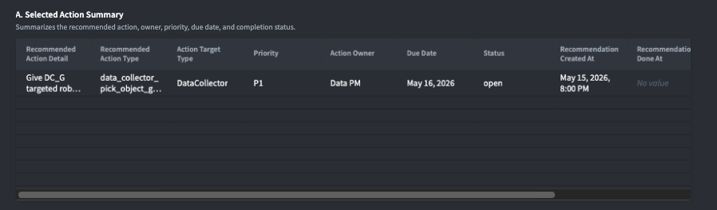
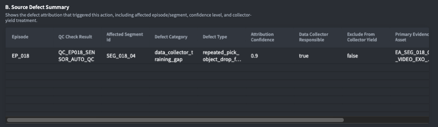
This path protects expert time: the Head Researcher never has to open an episode they don’t need to see. They land directly on the case, with full upstream context already attached.
This is the full-context path. From the Dashboard, a reviewer opens B. Physical AI Data Collection Review — All Episodes, selects one episode (especially a failed or partially salvaged run), and drills from full run context down into a specific segment.
The all-episodes table keeps decisions grounded in the original collection attempt. A reviewer can start from episode status, primary issue, source type, task, scenario, duration, and collection time before drilling into segment-level decisions. This prevents episode-level status from being confused with final segment-level training usability — a partial_salvage episode can still contain segments that are usable for training.
Opening EP_018 shows full-run context before any segment-level decision is made — a fixed top context bar with an Open Episode Video button, followed by:
| Layer | Question it answers | Why it matters |
|---|---|---|
| Selected Episode Summary | What happened to this collection attempt? | Separates episode status from segment-level training usability. |
| Episode Lineage Graph | How does this episode relate to other records? | Makes related records auditable. |
| Inherited Session Context | What collection conditions produced this episode? | Distinguishes isolated segment issues from repeated session or infrastructure problems. |
| QC Results | Which episode-level signals passed, warned, or routed a segment to review? | Uses QC as structured evidence and routing context, not as the final human decision. |
| Segment Decisions in the Same Episode | Which subtask segments are usable, excluded, or escalated? | Prevents the whole episode from being treated as a single pass/fail object. |
| Dataset Package Readiness | Are video, sensor, raw, and metadata export items ready? | Connects review closure to training handoff. |
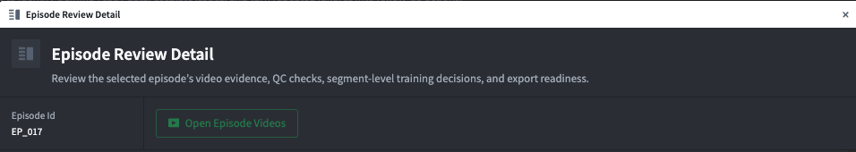
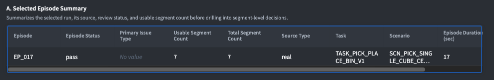
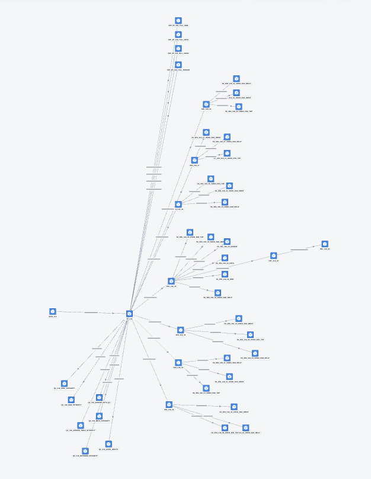
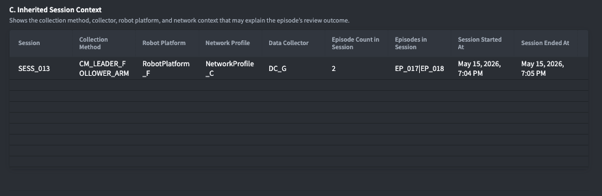
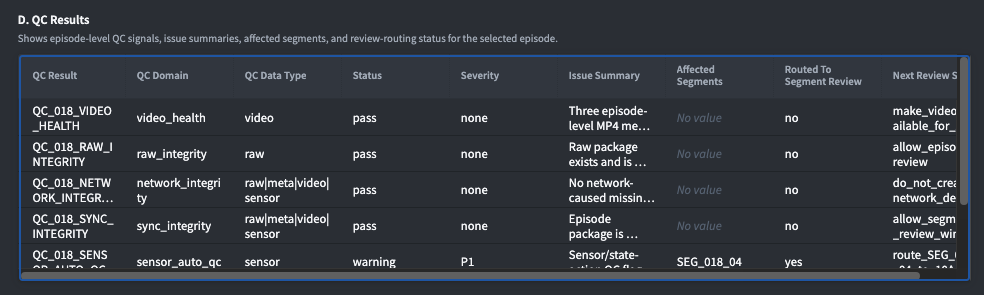
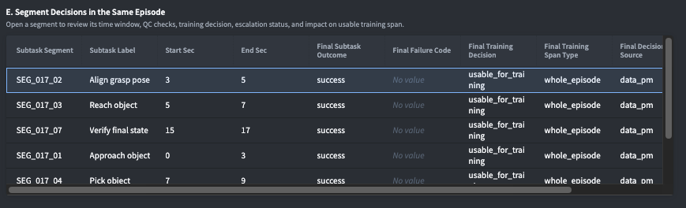
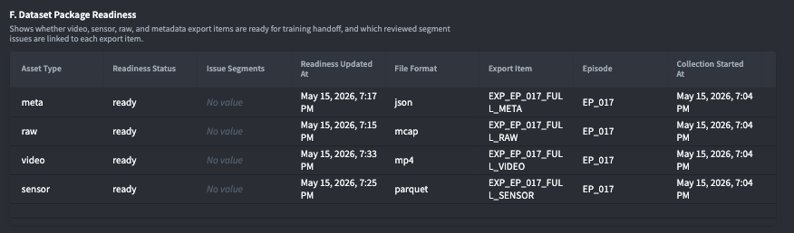
EP_018 has 7 total segments and 3 usable segments — a strong demo case because the episode is not simply “good” or “bad.” That partial outcome is the operational reason for drilling further into segment-level review.
Clicking SEG_018_04 inside the episode opens the same Segment Review Detail surface used in Path 1, but scoped to this episode/segment pair: Selected Segment Summary, Subtask Criteria, Segment Decisions in the Same Episode, Decision Evidence, staged reviewer decisions (read-only), Head Researcher’s Final Closure, Follow-up Action, and Dataset Package Readiness.
Segment Review Detail, Follow-up Action Detail, and the video/media drawer are common reusable surfaces, not separate fixed pages. Whether a Head Researcher arrives through the escalation lane or through an episode drilldown, they land on the same kind of decision surface — the displayed evidence, staged decisions, and follow-up rows simply scope to whichever segment was selected.
That reuse is a deliberate design choice: it keeps the decision logic in one place instead of duplicating it per entry path, while still letting each path optimize for its own situation — speed for the escalation lane, full context for the episode drilldown.
| Value signal | How the app shows it |
|---|---|
| Operational diagnosis | Moves the problem from “review is impossible” to a structured workflow with batch, episode, segment, evidence, and action layers. |
| Ontology and workflow judgment | Separates episode status, segment training decision, QC signal, evidence asset, defect attribution, action recommendation, and export readiness. |
| Expert time protection | Uses Initial Reviewer and Data PM stages to preserve context and escalate only the cases requiring Head Researcher judgment. |
| Training-readiness focus | Shows usable segment yield and dataset package readiness rather than assuming collected data is ready for training. |
| Actionability | Turns recurring defects into follow-up actions with owner, priority, due date, and source-evidence traceability. |
For a Deployment Strategist role, this is the part I would want to discuss: the work is not only about building screens. It is about finding the real operating constraint, defining the right decision grain, and shaping a workflow that lets a customer move from messy evidence to action.